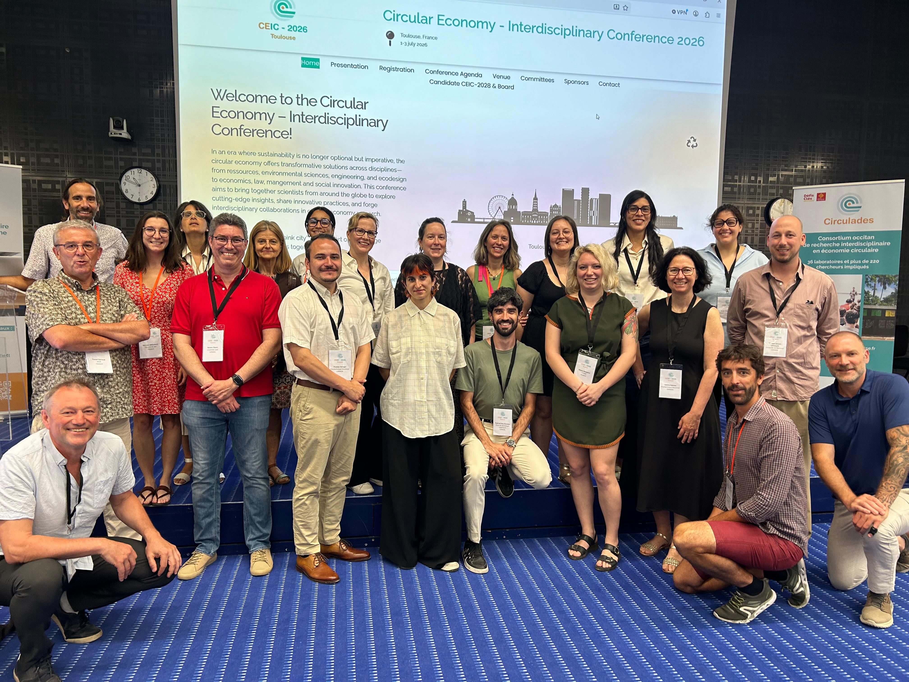

Agent de recherche et coordinateurice
Comité Équité Diversité Inclusion du RRECQ
Réseau de recherche en économie circulaire du Québec
Favoriser l'innovation en recherche en économie circulaire par la promotion de la diversité et d'adoption de meilleures méthodologies

À propos
Le comité EDI du Réseau de recherche en économie circulaire du Québec (RRECQ) travaille à une meilleure intégration des enjeux d’équité, de diversité et d’inclusion dans les activités du Réseau et, plus largement, dans la recherche sur l’économie circulaire. Il s’intéresse notamment aux conditions d’une transition circulaire socialement juste, attentive aux inégalités existantes et aux risques d’exclusion.
Ses travaux portent à la fois sur les pratiques de recherche et sur le fonctionnement du Réseau. Le comité cherche notamment à favoriser une plus grande diversité de disciplines, de profils et de perspectives parmi ses membres, à intégrer les considérations d’EDI dans la gouvernance et à encourager des pratiques de recherche plus inclusives. Il questionne également la place accordée aux personnes et aux groupes marginalisés dans la production des connaissances sur l’économie circulaire, ainsi que leur participation à la définition des enjeux de recherche et à l'appropriation de ses retombées.
Contribution
J’ai d’abord rejoint le comité EDI du RRECQ en tant qu’agent·e de recherche, avant d’en prendre la coordination. Dans ce cadre, j’ai assuré l’organisation et l’animation des rencontres du comité, tout en contribuant à la définition et à la réalisation de ses différents travaux.
Ma principale contribution a été la réalisation du rapport Bonnes pratiques et amélioration de l’EDI dans le travail en équipe, pour lequel j’ai mené l’ensemble de la recherche documentaire (littérature scientifique, littérature grise et ressources en ligne) et assuré la rédaction. Ce travail visait à identifier les pratiques susceptibles de favoriser des collaborations de recherche plus inclusives, en portant une attention particulière à la diversité des disciplines, des approches méthodologiques et des parcours académiques. Il a débouché sur des recommandations concrètes à destination des réseaux de recherche et de leurs membres.
J’ai également proposé et conçu un sondage visant à dresser un portrait de l’EDI au sein du RRECQ et à mieux comprendre les expériences, perceptions et besoins de ses membres. J’en ai élaboré le questionnaire et réalisé la programmation, avant de transmettre le projet à la personne qui m’a succédé et qui en a assuré le déploiement.
Enfin, j’ai réalisé un recensement des ressources et outils de formation en EDI afin de constituer une boîte à outils accessible aux membres du Réseau, destinée à soutenir l’intégration de ces enjeux dans leurs pratiques de recherche et de collaboration.
Productions et publications liées
- Alagy, C. (2024). Bonnes pratiques pour l’amélioration de l’équité, diversité et inclusion dans le travail en équipe interdisciplinaire. Réseau de recherche en économie circulaire du Québec (RRECQ).
- Boîte à outils EDI du RRECQ: liste de ressources